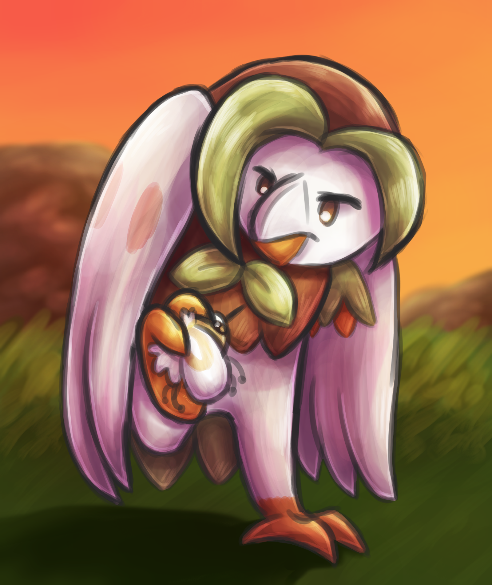
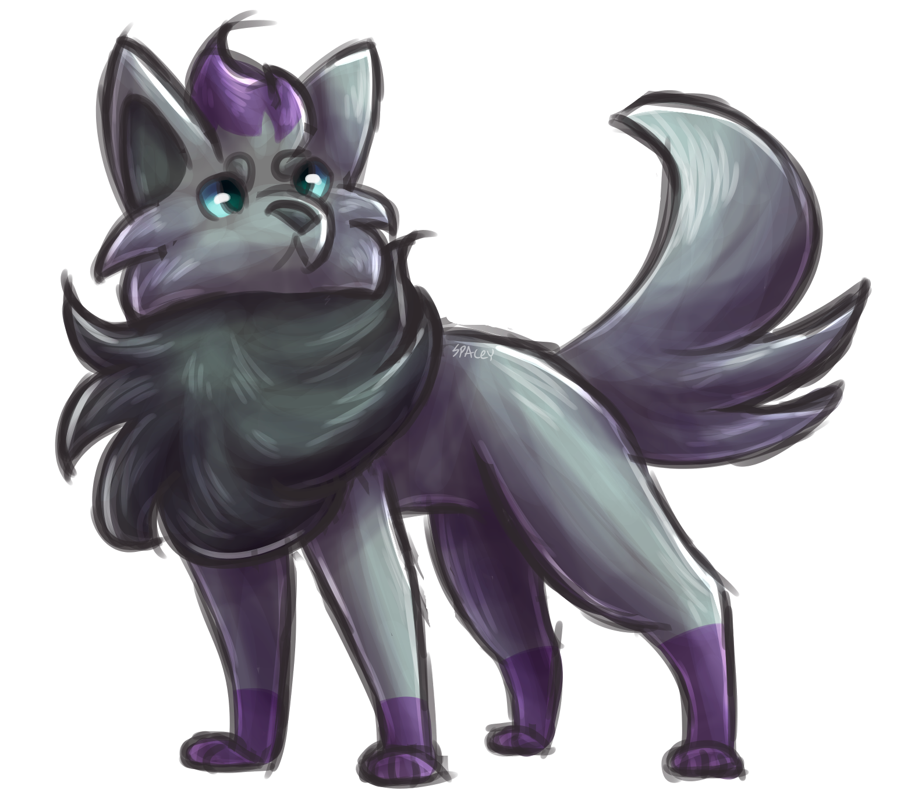

Creative & Queer
- 5 years of independent art, digital and traditional
- Experience with Medibang Paint, Photoshop, and Illustrator
- 4 years using a screenless Wacom drawing tablet
- 4 years independent creative writing
- Beginning knowledge of HTML, CSS, GML, and using Github
- Three years of French, best at reading and writing
- Roughly a decade of music experience, including piano, cello, and flute
- Proudly trans and autistic
Efficiency & Independence
- Able to grasp and replicate ideas or steps with relative ease
- Quick to take leadership position
- Works best independently
- Emphasis on routine and structure


Respect & Communication
- Mental health is a top priority
- Respect towards anyone regardless of ability or identity
- Clear and concise communication of thoughts and ideas
- Compromise on sensory needs
- Strive to finish tasks before they're due